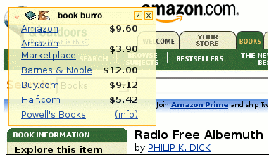

Information Research, Vol. 10 No. 4, July, 2005


Information Research, Vol. 10 No. 4, July, 2005 | ||||
|
|
|||
|
"grease monkey"
Slang. A mechanic, especially one who works on motor vehicles or aircraft. The American Heritage Dictionary of the English Language: Fourth Edition. 2000. "Greasemonkey" Greasemonkey is a Firefox extension which lets you to add bits of DHTML ("user scripts") to any Web page to change its behavior. mozdev.org Gist: Web readers use scripts to change Web pagesImplication: No bad Web pages!A user script is a set of JavaScript instructions that your Web browser runs just before it shows you a Web page. Isn't a Web page a pre-set document that my browser simply shows me? No, a Web server sends you HTML (HyperText Markup Language) that your browser constructs into a Web page. Just before your browser shows you the Web page, Greasemonkey can run your user script. Why do that? Unfortunately, on the Web you have no control over the content sent to you by a Web server. Think of annoying advertisements, blinking logos, hard-to-read colors, and just plain spam. But a user script empowers you to groom a Web page...inserting the style you prefer, deleting content you don't want and adding content that increases the utility of that Web page for you. A user script can even change the functionality of a Web page. Give Me An ExampleThe 9-year old son of Prakash Kailasa, a Greasemonkey developer, was preparing for a spelling bee. Using a dictionary Web site, the young speller had to click a microphone icon to hear a word pronounced. Prakash wrote a Greasemonkey user script ("Webster-say-word") that changed the functionality of the Web page so that the pronunciation was triggered by a simple mouse over. A humble but compelling example of how a user script can improve Web page utility! But JavaScript? I'm Not A Geek!Since most people have neither the time or desire to complicate their lives with JavaScript, you should browse the Greasemonkey script repository. There you will find free scripts such as:
 Greasemonkey scripts can create some interesting synergies between Web entities. For example, the Peninsula Library System script will indicate if a book listed on Amazon.com is available The Peninsula Library System (San Mateo, California), a consortium of 34 public and community college libraries. Jumping over the JavaScript hurtle might daunt a few so it is hardly surprising to find that there is at least entrepreneur, custom Greasemonkey userscripts , who will write a script for you. Convenient Greasemonkey development tools will be developed. Leading the way is Scott R. Turner who offers Platypus. Using this Firefox extension you can modify a Web page in your browser and save your changes as a Greasemonkey script that will be applied next time you visit the page. Other InitiativesScripters are not limited to just the Firefox browser. Two scripting extensions have just been introduced for Internet Explorer: Trixie and Turnabout. The Opera browser supports user scripts, and Apple's Safari browser has a plugin called PithHelmet. Given the novelty of user scripting, it is not surprising that, at this time, there are differences among these various tools. A script you develop for Greasemonkey may not work in another tool. Some may rely heavily on regular expressions (i.e., a computer technique for finding words in text) and there may be different support for XPath (i.e., a technology for addressing specific parts of a Web page). As user scripting develops over time, these differences will probably disappear. Implications of User ScriptingUser scripting has revolutionary potential. Historically power on the Web has been centrally located in the hands of systems administrators and Web authors. Hence the concern of usability (see the work of Jakob Nielsen) and accessibility. Imagine how both of these concerns can be addressed by customizing Web pages to meet the needs of specific readers. But power is seldom relinquished without a struggle. Expect scripting wars as Web authors react to preserve their ability to put advertisements and unwanted content in your face. Date: June 2005 |
For further information:Greasemonkey home Greasemonkey development
Greasemonkey editor Other sourcesDHTML Utopia: Modern Web Design Using JavaScript & DOM Other browsersOpera User Scripts
Trixie (Internet Explorer) |
| Find other papers on this subject. | |
|
|
|
Contents |
|
Home |